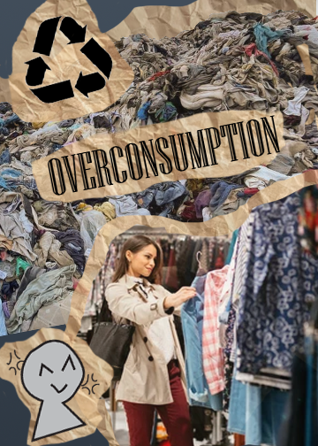
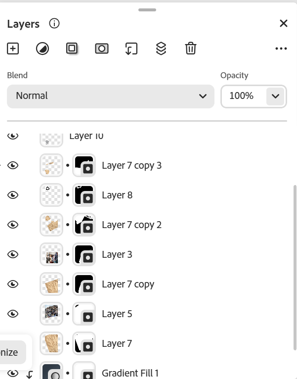

Overconsumption Photomontage

Layers

For this photomontage, I focused on the clothing industry and the amount of waste that is produced by our overconsumption of clothing. I found my images on articles about overconsumption and through a free image website for the wrinkled paper. For this photomontage, I wanted it to look like I made it on paper in a journal. For the image that I drew in Adobe Illustrator, I drew a tiny figure that was angry. I put this image next to the girl shopping as I wanted it to just show my own emotions towards overconsumption. I wasn’t really sure what I wanted to draw for this assignment, so I just went with the flow, and this was my first image that I drew that I felt was fitting (plus, I was proud of the anime angry image that I drew around the figure ^^). As for the text I made in Adobe Illustrator, I really liked the block letter, almost newspaper letters that I used to write the “overconsumption’” text. I really like how it looked like a stamp, and I wanted it to pop out some more, so I added the wrinkled paper that I used throughout this photomontage to the back of the letters. Overall, I really like the way this photomontage looks even with all the blank space that I had no idea what to do with. I really liked how simple it looks, and I really enjoyed adding text to my photomontage because I felt like that was one thing that was missing in my previous photomontage.
Home